你可能从没听过 Ontology 这个词，但它正在悄悄决定你用的每一个 AI 到底是"靠谱"还是"胡说八道"。
Ontology（本体论）听起来高深莫测，但它的本质其实很简单：就像建筑图纸定义了房子的结构框架和功能分区一样，本体论定义了 AI 认知世界的基本规则。它告诉 AI"这个世界长什么样"——哪些概念存在、概念之间有什么关系、什么是合理的、什么是不可能的。没有这份"宪法"，AI 就像一个没有图纸的装修工，可能把卫生间装到厨房里。
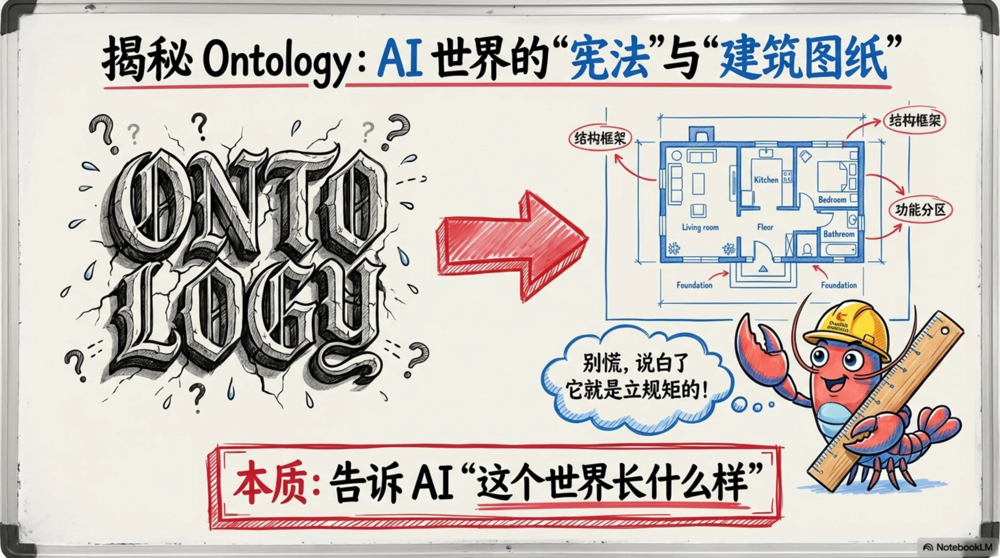
本体论的世界分为两层。Schema 层就像建筑蓝图，它规定了"什么能做、什么不能做"——墙必须连着地基，客厅不能没有入口。Data 层则是真正的城市生活，里面住着具体的人（比如张三，30岁），家具是什么颜色、冰箱里有什么。蓝图定义规则，城市填充数据。两者缺一不可：没有蓝图，城市就是一团混乱；没有数据，蓝图只是一张废纸。
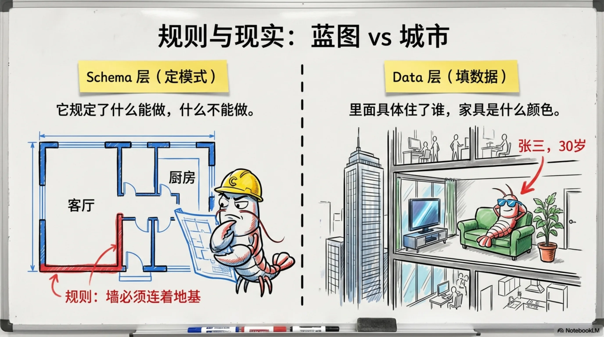
很多人把本体论和知识图谱搞混了，但它们的角色完全不同。本体论是"制定法律的法官"——它定义规则，几百条不变的逻辑，追求严谨推理；知识图谱是"搬运事实的快递员"——它管理数十亿条数据，每天动态更新，靠大规模图遍历查询。本体论关注的是"应该怎样"，知识图谱关注的是"实际怎样"。它是知识图谱背后的"终极裁判"。
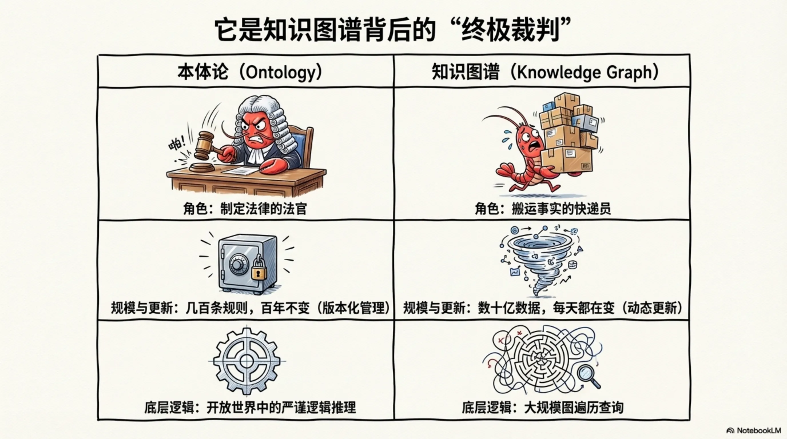
本体论靠三个核心工具来定义世界。第一是"类"（Classes）：建立概念的层次体系，比如"动物→狗→拉布拉多"的上下级关系。第二是"属性"（Properties）：定义概念之间的连线，比如"张三→工作于→某科技公司"。第三是"公理"（Axioms）：设置不可违背的逻辑约束，比如"小龙虾不能是自己的亲生爸爸"。三板斧一出，AI 的认知世界就有了骨架、经络和底线。
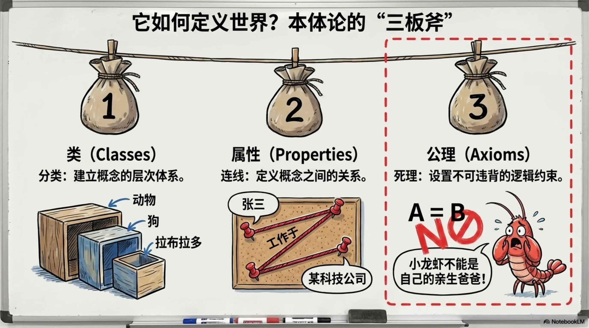
为什么 AI 需要本体论？因为没有它，大模型（LLM）只是一个记忆力超群但缺乏常识的"文字接龙机器"。它可能信口说出"张三是他自己的亲爷爷"这种荒谬的话。而有了本体论的公理约束，系统会立刻检测到"逻辑不通！触发矛盾约束！"，然后纠正为"张三是张老三的孙子"。本体论就是 AI 的幻觉灭火器，为它注入了约束验证与逻辑追溯能力。
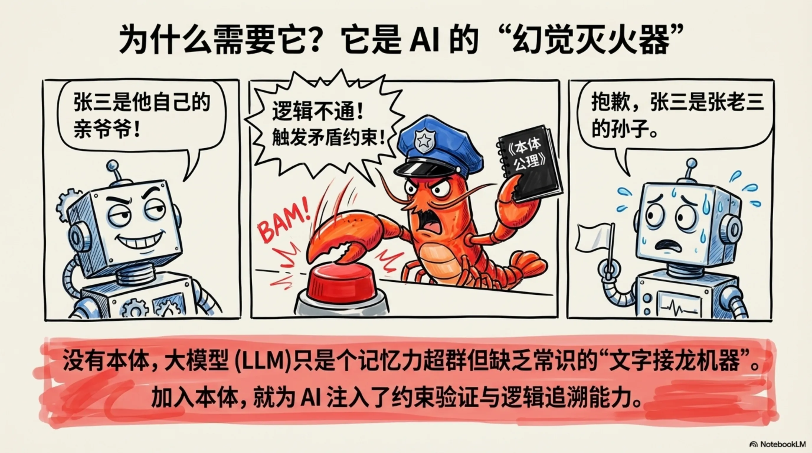
Ontology（模式层/逻辑规则）+ Knowledge Graph（数据层/实例事实）= 有法可依的百科全书。这个公式是理解整个 AI 知识体系的钥匙。二者绝不是竞争关系，而是互补的分层架构：本体是图谱的"宪法"，图谱是本体的"实例化社会"。宪法规定公民的权利义务，社会中的每个人则是宪法的具体践行者。
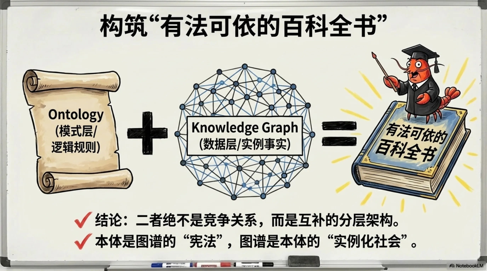
既然本体论这么重要，为什么整个 AI 行业只有 Palantir 一家敢大张旗鼓地把"Ontology SDK"写在产品文档里？这家市值4000亿美元、均单近1亿美元的公司到底看到了什么？而其他 AI 大厂为什么对这个词避之不及？要找到答案，我们需要回到20年前，看看本体论经历了怎样的"黑历史"。
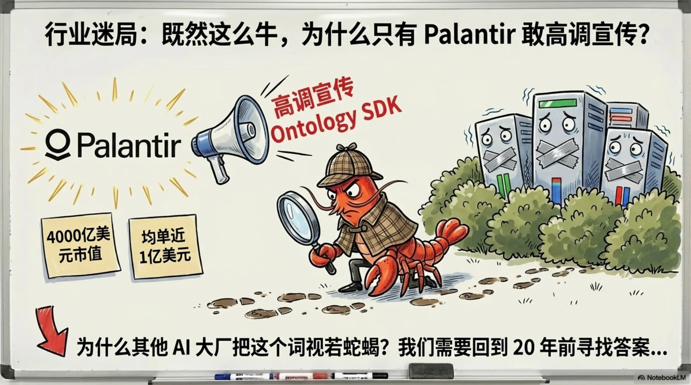
2000年，Tim Berners-Lee 提出了 Semantic Web（语义网）的宏大愿景：全人类共享一套统一的词汇表。然而到了2010-2015年，这个理想主义项目彻底凉了——太学术、没人维护，工程师们用脚投票选了 JSON。"Ontology"在工程界被打上了"重理论、不实用"的毒标签，成了学术界的自嗨、工程界的地狱。但到了2025年，Palantir 和企业级 AI 正在将它重推巅峰。
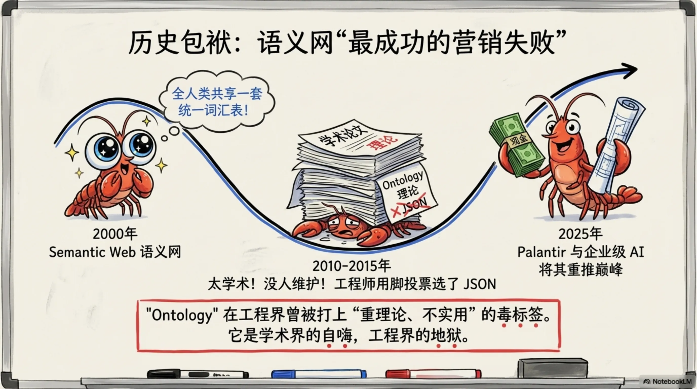
语义网失败的核心原因是试图让全世界都遵守同一套"开源标准"，但没人愿意自愿遵守。Palantir 的聪明之处在于：它根本不管"全网互通"，只服务单个组织内部。工程师驻场帮客户建模，把 Ontology 变成了一个精心品牌化的数据建模层。它连接企业旧系统（ERP、传感器），把混乱的数据梳理成结构化的知识体系。这是实用主义对理想主义的胜利。
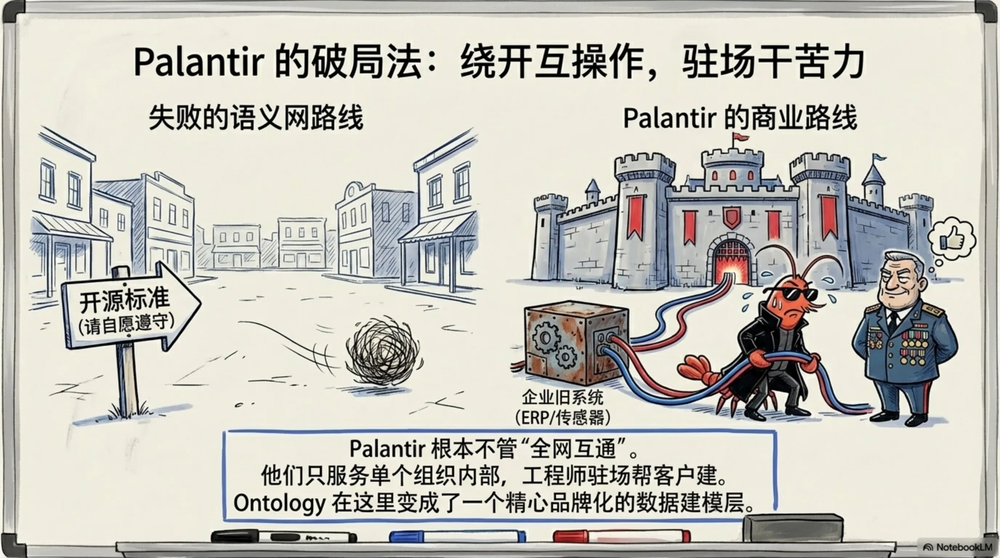
别以为只有 Palantir 在做本体论。微软叫它 Semantic Contracts（语义合约），Databricks 叫它 Unity Catalog / Semantic Layer（语义层），Google 叫它 Knowledge Graph（知识图谱）。名字换了（语义层、上下文图、数据目录），但做的事情完全一样：形式化定义指标、维度和关系。Palantir 不是唯一用的，只是唯一把它当品牌讲的。
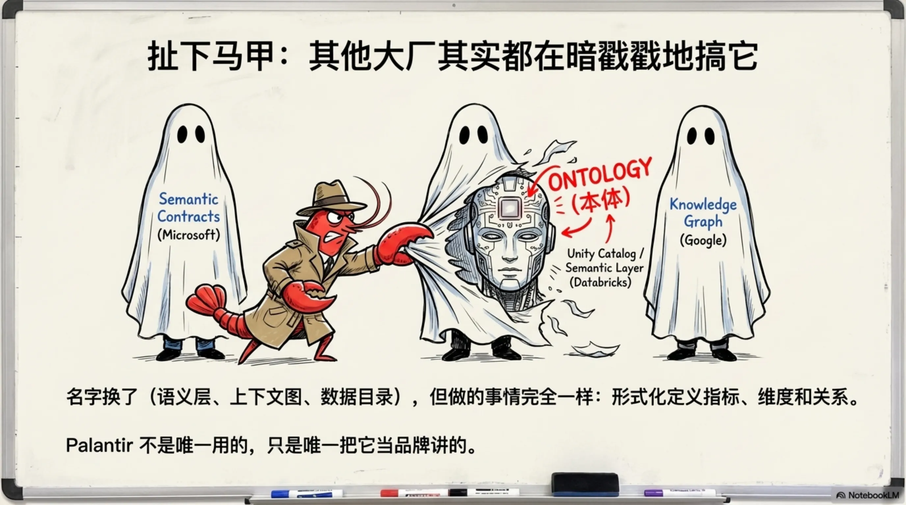
当前最强大的知识驱动 AI 架构由三层组成：顶层是 LLM（大模型）——负责"沟通"，理解自然语言并生成回答；中层是 Ontology（本体论）——负责"逻辑与规则"，确保推理不出错；底层是 Knowledge Graph（知识图谱）——负责"记忆与事实"，存储实体和关系。图谱提供事实，本体提供约束，大模型负责表达。端到端大模型不是万能的，这才是靠谱的 AI 后端架构。
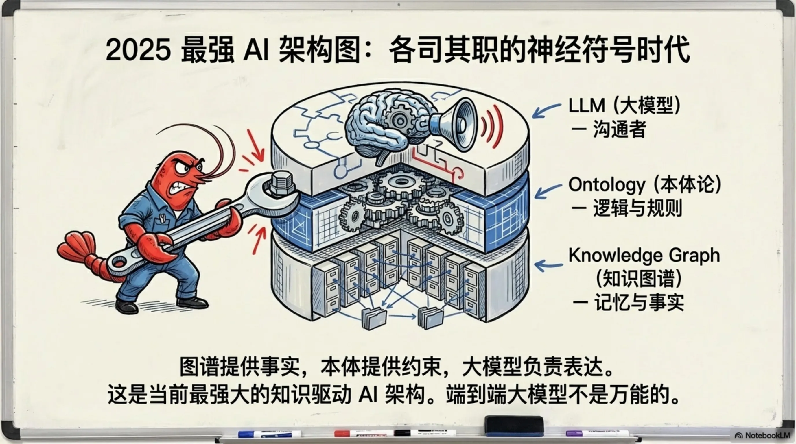
记住这四条，再也不会被行业黑话忽悠：1. 别怕名字——Ontology 就是帮 AI 认清世界的"数据建筑图纸"；2. 终极公式——图纸（Ontology）+ 砖块（KG）= 靠谱的 AI 后端；3. 看破红尘——不管叫"语义层"还是"上下文目录"，只要它在定义"什么是什么"，它就是个本体；4. 告别幻觉——想让大模型不胡说八道？先给它立好规矩！
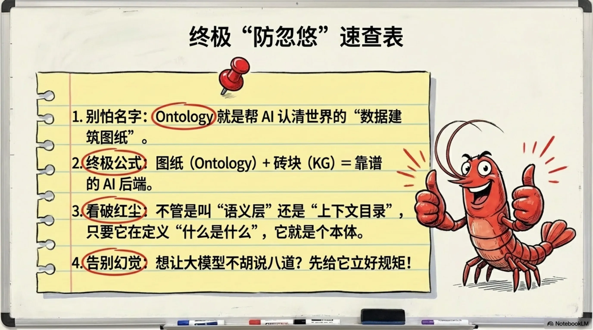
本文基于 NotebookLM 生成的图文内容整理。原始素材版权归原作者所有。